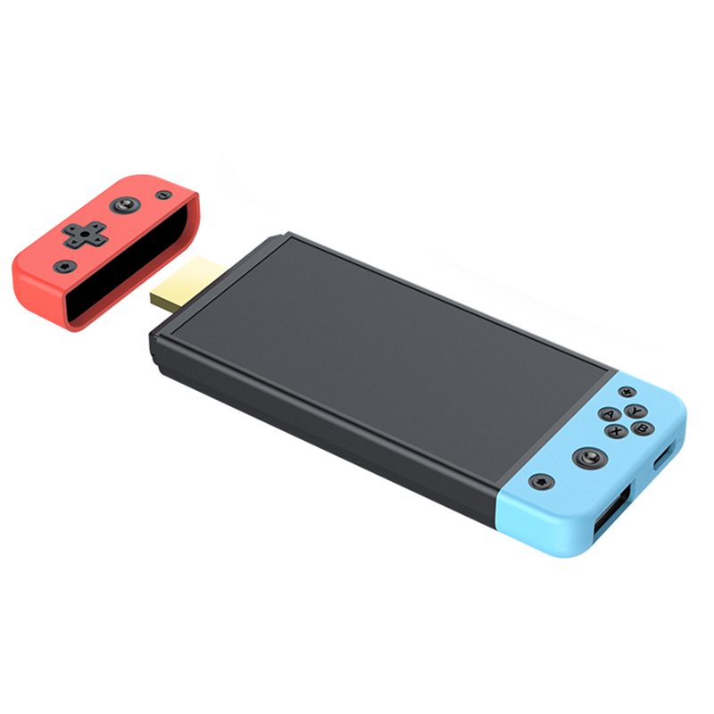
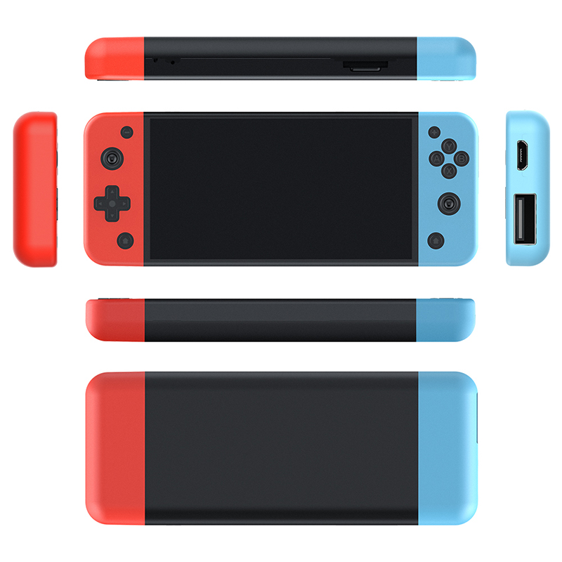

We took a retro game stick apart from the inside.
It arrived as an SD card with five partitions. The fourth is a squashfs root filesystem, and almost everything interesting is in it. None of it matches the spec sheet the thing is sold under.
What follows is a working set of notes: what the hardware actually is, how the menu is assembled, how to add games without breaking it, and an encrypted blob that protects nothing and is never executed. Source, tooling and the long-form notes are on GitHub.
01 — WHAT IT ISNot the console on the box
The product page this device is sold under describes the M66: an Amlogic-class SoC with Mali-G52 graphics running EmuELEC 4.3. SJGAM's site lists no M68 at all — we enumerated every product ID on it and got M5, M8, M9, M15, M17, M18, M26, M27, M28, M30, M31, M66 and M88.
The card in our M68 contains none of those things. The emuelec/ and
emulationstation/ directories in the root filesystem are empty mount points — decoys, essentially,
inherited from whatever image this was forked from.
| Build string | M68 / V1.0.0 / 2026-01-22 14:50 in /etc/version |
|---|---|
| CPU | 32-bit ARM Cortex-A7, Rockchip SoC (rockchip-efuse0 in sysfs) |
| Binaries | ELF 32-bit LSB ARM EABI5, armhf, /lib/ld-linux-armhf.so.3 |
| Userland | Buildroot 2018.02-rc3, BusyBox init, kernel 4.4-era headers |
| UI toolkit | MiniGUI — not EmulationStation, not RetroArch's own menu |
| Launcher | /usr/bin/game, 135,832 bytes, stripped |
| Emulation | RetroArch 1.x with libretro cores, plus PPSSPP for PSP |
| Display | DRM/KMS direct to HDMI (card0-HDMI-A-1) |
| Card layout | /sdcard → /mnt/sdcard; /data is a symlink to the same place |
02 — BOOTA door left open in the init script
BusyBox init runs /etc/init.d/rcS, which runs everything in /etc/init.d/S??* in
order. The last one, S50ui, starts the interface — and contains this:
# /etc/init.d/S50ui export XDG_CONFIG_HOME=/sdcard/ mount /dev/block/by-name/userdata /data if [ -e "/sdcard/test" ]; then export LD_LIBRARY_PATH=LD_LIBRARY_PATH:/sdcard/test/lib export MG_CFG_PATH=/sdcard/test /sdcard/test/test.sh & else export MG_CFG_PATH=/usr/local/share/minigui/hdmicfg /usr/bin/game & fi
Create a directory called test on the card and the stock launcher never runs. You get to start
anything you like — your own UI, RetroArch directly, a shell — with no change to the read-only root
filesystem, and deleting the directory puts everything back. A serial console
(getty on console) and adbd are both already present.
Two of the three exported variables are wrong for anything started this way, which is a good hint that this path has not been used in a while:
LD_LIBRARY_PATH=LD_LIBRARY_PATH:/sdcard/test/lib— the$is missing, so the real value is replaced with a literal string.MG_CFG_PATH=/sdcard/test— there is noMiniGUI.cfgthere, so a MiniGUI app started fromtest.shhas to reset it.
game_type 99 loads a libretro core from
/sdcard/gmtest/test.so with /sdcard/gmtest/test.cfg. Side-loading an emulator needs
no firmware modification either.
04 — CORESCounting the "30+ emulators"
Launching a game execs a shell script with the ROM's type number, which selects a core:
# /usr/local/share/minigui/start_game.sh
$EMU_RA -c $GAME_CFG --appendconfig "$2" \
-L /usr/local/share/minigui/retro_lib/$GAME_LIB "$3"
The script's case statement names 37 distinct cores. The retro_lib/ directory contains 26 of
them. Eleven core files are referenced and absent, covering nine emulators:
| Missing core | game_type | System |
|---|---|---|
mupen64plus | 8 | Nintendo 64 |
desmume2015 | 12 | Nintendo DS |
fmsx | 37 | MSX |
picodrive | 38 | Mega Drive / 32X |
atari800 | 16, 22 | Atari 800 |
daphne | 2 | Laserdisc arcade |
mame2003 | 4, 26 | Arcade |
prosystem_other | 23 | Atari 7800 |
snes9x_racing | 19 | SNES (tuned build) |
A game_type whose .so is missing produces a black screen, not an error message.
Going the other way, pcsx_rearmed_libretro2.so ships and nothing references it.
n64 folder as
game_type 8 — mupen64plus, which is one of the missing eleven. The 24 N64 titles in
the shipped database are all game_type 66, a standalone emulator called n2626 with
its own config. Add an N64 ROM the easy way and it will not boot.
05 — DATABASE21,520 rows and one landmine
The menu is populated from /sdcard/game/games.db, a SQLite file with nine tables. The important
one is tbl_game; four more hold titles in English, Simplified Chinese, Traditional Chinese and
Korean, and tbl_match holds pinyin-initial search keys (拳皇97 → qh97QH97).
| Column | Meaning |
|---|---|
gameid | 1-based, always equal to rowid |
game | ROM filename without extension |
suffix | Extension with the dot, e.g. .zip |
timer | The ROM's directory. Yes, really. |
game_type | The start_game.sh case number → picks the core |
class_type | Vestigial. Mirrors game_type above 18, incoherent below it |
hard | Difficulty. Read, never usefully written |
A column called timer that contains a filesystem path is the join key between the card and the
database. We have no theory either.
The landmine
Titles are loaded like this, with no WHERE and no ORDER BY:
SELECT en_title FROM tbl_en
…into a flat array, then indexed positionally against the tbl_game array. The
en_id, zh_id, ko_id and tw_id columns are never used in a
join — they are decoration.
tbl_game, in the same order.
One missing row silently shifts every title after it, and you get a library where each game is named after a
different one.
While you are in there: tbl_tw contains Korean and tbl_ko contains Simplified
Chinese. tbl_total claims 1,329 rows against an actual 21,520 and is ignored by the UI.
tbl_video has preview clips for the first 1,099 games and dangling IDs for the other 20,421.
Adding games the easy way
You mostly do not need to touch the database at all. Every boot, the launcher runs:
system("cp -a /sdcard/game/games.db /sdcard/game/games_scanf.db");
…and then scans /sdcard/game1/, creating 27 system subdirectories if they are missing, and
appending a row for every ROM it finds. Drop files into
/sdcard/game1/<system>/ and they appear on the next boot, with
games.db left untouched. The cost is that titles are bare filenames, and the core inference has
the bugs noted above.
Category counts, incidentally, come from the database alone — SELECT rowid FROM tbl_game WHERE timer
LIKE …. A tile will cheerfully report 540 Mega Drive games with none of the files present; you only
find out at launch, when it prints Game file not found.
06 — CRYPTO/etc/webster, decrypted
A 4,986-byte encrypted blob sits in /etc. The launcher decrypts it to
/tmp/webb.sh, chmod +x's it and runs it. We expected a licence check or a dropper.
It is an older copy of start_game.sh that loads its cores from the SD card
instead of the root filesystem.
The cipher keys itself off three things that are all meant to be untouched on a genuine unit:
# /etc/version -> how long the keystream is and where it starts sum = every byte of the first two lines of /etc/version a-b-c/d = the third line, parsed as "%d-%d-%d/%d" klen = (sum % 64) + d size = klen + 512 offset = (b*c*d + a) % (len(S50ui) - klen - 512) # /proc/version -> the kernel builder's user@host key = text between the first '(' and the next ')' # the keystream is a window of the init script itself block[j] = S50ui[offset + j] ^ key[j % len(key)] plain[i] = ((cipher[i] - klen) & 0xff) ^ block[i % size]
Which is a neat idea: the keystream is a slice of /etc/init.d/S50ui, XORed with the
username of whoever built the kernel. Edit the init script, edit the version file, or boot a kernel compiled
somewhere else, and the output turns to noise. It is a tamper detector wearing a cipher's clothing.
Recovering it without the device took an index-of-coincidence scan for the period, a
#!/bin/sh crib to find the offset, and a per-position solve for the key:
| Keystream size | 582 |
|---|---|
| Offset into S50ui | 2215 |
| Subtracted byte | 70 |
| Key from /proc/version | Percival@dell-build-sz-35 |
The recovered keystream repeats with a clean period of 25 across all 582 bytes, which also proves the
S50ui on our card is byte-identical to the one on the vendor's build machine. Somewhere there is
a Dell in Shenzhen, and a person or service account called Percival.
/etc/version derives
size 544, offset 11 — not the 582/2215 the file needs. It was encrypted against a different
version string and never re-generated. On this unit it would decrypt to garbage, get chmod +x'd,
and fail to run.
It is also moot, because nothing calls it. See below.
07 — DEAD CODEThings that were wired up and unplugged
The anti-clone check
Three functions sit next to each other in game: the webster decryptor
(0x2a898), its caller (0x2aca0), and a hardware check (0x2abcc).
None of them is reachable — no bl targets them and their addresses appear
nowhere as data. The live path is enterGame at 0x18d40, which calls
start_game.sh like everything else.
Which is a pity, because the hardware check is the most entertaining function in the binary:
fd = open("/sys/bus/nvmem/devices/rockchip-efuse0/nvmem", O_RDONLY);
if (fd < 0) system("poweroff");
if (lseek(fd, 7, SEEK_SET) < 0) system("poweroff");
read(fd, buf, 2);
if (buf[0] != 'C' && buf[1] != 'X') system("poweroff");
Two bytes at offset 7 of the Rockchip eFuse must be 'C' or 'X'. Note the
OR — either byte passing is enough. Note also that system("poweroff") does not
abort, so control falls through regardless and the box keeps running while the shutdown request makes its
way through init. An anti-clone measure that is both half-written and disconnected.
A whole second interface
/usr/bin/lvui is a 10 MB LVGL application that S50ui never launches. It links
sqlite3, ALSA and libstdc++ but not MiniGUI, draws to /dev/fb0 rather than DRM, and
reads /proc/ov7251 — an OmniVision camera sensor this device does not have. It has music, video
and photo apps alongside the game launcher. Its artwork lives in
/usr/local/share/lvgl/{picture,game,music,video}/, of which this firmware ships exactly one
file: nosdbg.png. It is a handheld's firmware that came along for the ride.
Odds and ends
/proc/secic— a 32-byte challenge/response against a security chip: write, sleep 15 ms, read back. Returns success if the node is absent, so probably not a hard gate.- A custom base64 alphabet,
abcdefghij…WXYZ8923456701+/, sits in.rodatawith nothing referencing it. - The button-remap screen writes to
/sdcard/w20c/minigui/retroarch_hdmi.cfg. There is now20cdirectory in this firmware's layout. start_game.shis salted throughout with comments like# M1nO4pQ7rS2tU6vW9xY3zA5bC8dE1fG6hI2jK7mN0pQ9rS3tU5vW8xY2zA7bC4dE, apparently as watermarking.
08 — TOOLINGWhat's in the repo
Everything above is reproducible from the card. The repository carries the notes, the recovered plaintext and three scripts:
NOTES.mdThe long-form teardown: boot path, menu construction, full database schema, the folder → core mapping table, and the crypto, with addresses.tools/build_gamesdb.pyBuilds or extends agames.dbfrom a ROM tree, keeping the title tables row-aligned so you do not trip the landmine, and correcting the core assignments the firmware's own scanner gets wrong. Rebuilding with--basereproduces all 21,520 stock rows byte-identically.tools/make_test_launcher.shWrites the/sdcard/test/override onto a card. Logs each boot to the card, and falls back to the stock launcher if the target dies within 15 seconds, so a failed experiment cannot leave a black screen with no way back in.tools/webster.pyDecrypts and re-encrypts/etc/webster, prints the derivation for any root filesystem, and recovers the parameters from scratch without/proc/version.webster-decrypted.shThe plaintext, for anyone who would rather just read it.
No ROMs, copyrighted game data or firmware images are distributed — just the notes and the scripts.
09 — THE HARDWAREFor completeness
Manufacturer imagery from the M66 listing — the page this device is sold under, whether or not it describes it.


10 — ANSWERSQuestions we had first
Can I brick it by experimenting?
The root filesystem is a read-only squashfs on its own partition, and everything described here is driven
from the writable data partition. The realistic failure is a black screen from a launcher override that does
not come up, which is recovered by deleting /sdcard/test on a PC. Reflashing partitions is a
different risk and not something we have tested.
Does it really have 21,520 games?
It has 21,520 database rows. A row is an index entry, not a guarantee that the file exists or that a core
can run it, and a large share are duplicates and regional variants of the same titles. The 13,506 rows of
game_type 1 are NES.
Will it run PS2, Dreamcast or N64?
There are menu icons for Dreamcast and Naomi and no emulator for either. N64 works only through the
standalone n2626 emulator at game_type 66; the libretro N64 core the scanner
assigns is not on the card. PlayStation 1 works, via pcsx_rearmed. PSP works, via PPSSPP.
Is this the same as the M66?
No — see section 01. It is worth saying plainly because the two are sold under near-identical names and photographs while the hardware inside differs.
Who is Percival?
No idea. The account that built the kernel, on a machine called dell-build-sz-35. Hello.